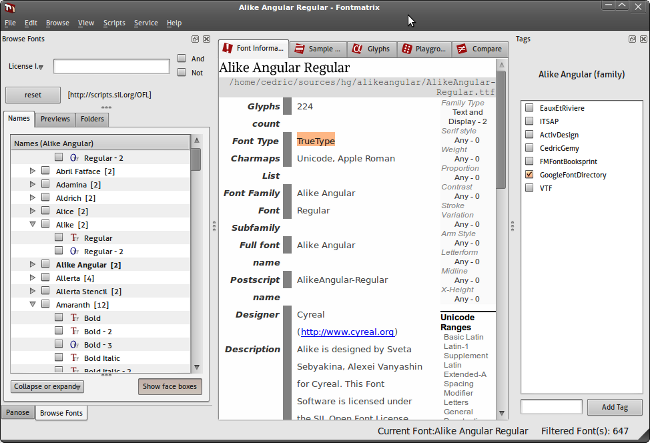

Outils complémentaires
Dans ce chapitre nous présentons succinctement différents logiciels pour modifier ou créer une fonte. Fontforge est le logiciel libre dédié à cela, mais il n'est pas le seul dans la boîte à outils du créateur de fontes. D'autres logiciels ont des spécificités appréciables pour différents aspects de la création et de la maintenance d'un projet de fonte libre.
Outils de numérisation
Dans le cadre de notre livre, la numérisation est l'action de transformer le dessin d'une ou plusieurs lettres en caractère pour notre fonte.
Glyphtracer
Glyphtracer est un logiciel permettant de vectoriser des lettres scannées ou sous forme d'images numériques et de les ouvrir dans FontForge pour générer une fonte à partir de ces formes. Pour l'utiliser il vous faudra :
- Glyphtracer que vous pouvez télécharger sur son dépôt Launchpad1
- il faut que l'interpréteur python soit pré-installé (c'est le cas sur tous les *nix en général)
- il faut aussi que Potrace soit présent (apt-get install python potrace)
Pour installer Glyphtracer, décompressez le ficher téléchargé et dans un terminal, allez vers ce dossier puis entrez la commande : sudo python setup.py install
Vous pouvez ensuite lancer Glyphtracer par vos moyens habituels.
- Glyphtracer ouvre une petite fenêtre dans laquelle vous pouvez saisir le nom de votre fonte, spécifier dans quelle image votre texte scanné à été enregistré et enfin spécifier le nom du fichier de fonte au format FontForge sfd.
- Glyphtracer analyse l'image et ouvre une fenêtre dans laquelle chaque lettre sera encadrée. En bas, quelques boutons vont permettre d'associer les caractères aux glyphes.
- À gauche, choisir le bloc de référence. à droite du bouton [Next Glyph], le caractère à définir apparaît (par défaut a si vous êtes dans le bloc [Latin lower case]).
- Cliquez alors sur une lettre a de qualité dans votre image, pour l'associer. Glyphtracer passe immédiatement au glyphe suivant. Continuez ainsi pour chaque lettre et chaque bloc.
- Si certains glyphes ne sont pas présents dans votre texte, vous pouvez les passer en cliquant sur le bouton [Next Glyph].
- Lorsque vous avez récupéré les glyphes possibles ou recherchés, cliquez sur le bouton [Generate SFD file].
- Vous pouvez alors ouvrir cette fonte dans fontforge pour la modifier plus précisément.
Glyphtracer analyse seulement des images avec une profondeur de 1 bit par pixel. De nombreux logiciels permettent d'enregistrer ainsi. Dans Gimp, allez dans Image > Mode > Couleurs Indexées et choisissez Utiliser la palette noir & Blanc (1-bit) puis enregistrez dans Fichier > Enregistrer sous. Choisissez un format sans perte comme png pour que les contours des lettres restent facilement analysables par Glyphtracer.
Fonzie
Fonzie2 est un outil de numérisation analogue à Glyphtracer développé par Pierre Marchand.
Autotrace dans Fontforge
Autotrace est un outil de numérisation analogue à Glyphtracer développé par Martin Weber.
À noter qu'il existe une version intégrée dans FontForge3 et une version autonome4 .
Outils de dessin
Inkscape
Inkscape est un logiciel de dessin vectoriel performant dont le format d'enregistrement plain SVG est un format standard qui contient une recommandation concernant les fontes. Inkscape intègre des options permettant de créer les caractères (courbes de Bézier à la PostScript, courbes Spiro, éditeur de fontes SVG) compatibles avec FontForge. Plus loin dans le manuel nous lui consacrons une section entière.
Outils d’optimisation
Ttfautohint
Ttfautohint5 est un logiciel permettant d'optimiser automatiquement les instructions de correction d'affichage (hinting) en tirant parti des fonctionnalités de FreeType. Une interface graphique est en cours de création.
Autohint dans Fontforge
La fonction autohint de Fontforge permet d’automatiser certains aspects de l'optimisation de l'affichage (hinting). Des boîtes de dialogues dédiées permettent d'étudier, de tester et de modifier ces instructions. Mais cela reste un domaine relativement ardu.
Outils de gestion
FontMatrix
FontMatrix6 est un logiciel destiné à faciliter la gestion de sa propre collection de fontes.
Il permet d'explorer, de comparer et de classer ses fontes selon divers critères tout en examinant en détail leurs différentes caractéristiques. FontMatrix établit une classification initiale en fonction des informations lues dans les métadonnées des fontes qui ont été détectées.
Trouver une fonte selon des critères internes
Pour trouver une fonte selon des critères internes aux métadonnées, il faudra utiliser les propriétés renseignées par les auteurs. Dans FontMatrix, dans le panneau de gauche, il suffit de choisir la propriété dans la liste placée en haut, par exemple [License Info URL] et de noter à côté la valeur recherchée, par exemple : http://scripts.sil.org/OFL pour trouver les fontes que leurs auteurs ont choisi de distribuer sous license OFL. Appuyez sur [Entrée] pour valider la recherche. Dans la liste en dessous, seules les fontes correspondant aux critères vont apparaître.

Pour affiner la recherche vous pouvez de la même façon choisir d'autres critères et utiliser les cases AND et/ou OR pour mentionner si vous souhaitez cumuler ces critères pour exclure (AND) ou inclure les nouvelles possibilités (OR).
Trouver une fonte selon un classement personnel
Le classement personnel dans FontMatrix utilise la méthode répandue des Tags (étiquettes). Pour créer vos propres étiquettes, affichez la fenêtre correspondante (View > Tag). Dans le bas de la fenêtre, saisissez la nouvelle étiquette dans le champ en bas et cliquez sur le bouton [Ajouter l'étiquette] (Add tag). Elle apparaît alors dans la liste. Pour l'appliquer à certaines fontes, il suffira de sélectionner ces fontes et de cocher sur la case correspondant aux étiquettes à appliquer. Une fonte peut évidemment posséder plusieurs étiquettes.
Une fois cette étape préparatoire franchie, il est facile de trouver les fontes qui correspondent à un tag (étiquette). Dans la liste des options de recherche, il suffit de choisir [Tags]. FontMatrix affiche alors la liste des étiquettes parmi lesquelles vous pouvez choisir. Dans l'exemple, on peut voir ici que trois fontes correspondent à la recherche sur l'étiquette EauxEtRiviere. On peut voir que la fonte sélectionnée est aussi étiquetée ITSAP.
Activation de fontes
Cette méthode est en partie utile pour activer les fontes sur un temps donné d'utilisation sans avoir à les installer-désinstaller. Cela permet d'avoir des listes moins longues à l'intérieur des logiciels et de travailler plus vite. Pour les rendre disponibles, il suffira de cocher les cases à gauche des fontes souhaitées dans la liste générale.
Analyse de fontes
Si l'onglet [Information de fonte] donne accès aux informations métadonnées saisies par l'auteur de la fonte, l'onglet [Glyphes] permet à l'utilisateur d'analyser le contenu de la fonte.
Il est possible de rechercher de deux façons :
- soit par bloc Unicode, auquel cas il est possible de choisir le bloc de référence dans lequel le glyphe attendu est sensé se trouver
- soit par recherche de caractère; il suffit alors de noter la valeur unicode précédée de U+ dans le champ de recherche en haut à droite de l'onglet par exemple le U+0192 pour le florin, U+0066 pour le f etc.
Si les caractères que vous cherchez ne sont pas disponibles dans cette fonte, il sera préférable d'en choisir une autre, ou si celle-ci est libre, de la modifier.
Comparaison de fontes
Enfin, pour la personne qui doit choisir entre diverses fontes, il va être possible de faire une comparaison dynamique de glyphes par superposition. Cela aide à l'analyse précise des glyphes tant pour le créateur qui aimerait s'inspirer d'une fonte existante que pour l'utilisateur exigeant qui veut faire un choix mûrement réfléchi.
Pour cela, il suffit de :
- Sélectionnez une première fonte dans la liste, puis d'aller dans l'onglet [Comparer](Compare)
- Cliquez sur le bouton [Ajouter] (Add) puis dans la partie inférieure sous le bouton choisir une couleur de remplissage, par exemple et d'autres caractéristiques d'identification.
- Recommencez avec une autre fonte sélectionnée.
- Pour choisir le glyphe à comparer, dans la liste tout en bas à droite, déroulez pour sélectionner celui qui vous intéresse.
On peut aussi comparer le rendu de certains caractères ou de phrases ou de paragraphes entiers dans diverses langues à partir de modèles de texte déjà fournis.
Scripts et petits utilitaires divers
Fontforge dispose d'une interface en python7, un langage de programmation utilisé par beaucoup d'autres logiciels libres dans le domaine de la création et du graphisme. Cela permet d'automatiser certaines tâches et de créer des petits scripts permettant d'accéder à certaines fonctionnalités de FontForge directement.
Un module perl Font:TTF8 permet aussi l'utilisation de toute une série d'utilitaires pour diagnostiquer, modifier et ajuster des fontes.
Pour réaliser un script python afin d'accéder aux éléments d'une fonte pour les modifier ou les analyser, il est nécessaire d'avoir des notions en :
- langage interprété python, et d'avoir python installé9, ce qui devrait être le cas sur la majorité des distributions Linux
- méthodes mises à disposition par FontForge pour accéder aux éléments
- en fonte et glyphes et en particulier sur les composants et la nomenclature auxquels ils se référent.
Quelques exemples de ces scripts sont publiés sur: utilities.open-fonts.org10
- https://launchpad.net/glyphtracer^
- http://oep-h.com/fonzie/^
- http://fontforge.sourceforge.net/autotrace.html^
- http://sourceforge.net/projects/autotrace/^
- http://www.freetype.org/ttfautohint/ ^
- http://www.fontmatrix.net^
- http://fontforge.sourceforge.net/python.html#fontforge^
- http://search.cpan.org/dist/Font-TTF/^
- http://www.python.org^
- http://utilities.open-fonts.org ^